Système de ramassage
Après les testes de préselection de la compétition du Tekbot Robotic Challenge 2025 (TRC_2025), l'équipe mécanique poursuit son travail et mettant en profil son expertise en conception assisté par ordinateur sous solidwork. A travers cette documentation, nous allons présenter la conception et le fonctionnement d'un système de ramassage innovant développé par notre équipe. L'objectif était de développer un système efficace, facile à controler via ROS pour permettre au robot rosmaster X3 de pouvoir ramasser rapidement différentes types de déchets.
1. Choix et modélisation
Après de longues discussions et plusieurs propositions étudiées, nous avons finalement adopté un système très simple et facile à mettre en œuvre, permettant de ramasser les déchets de manière efficace. Ce mécanisme repose sur le principe pignon_crémaillère : des crémaillères guidées assurent un mouvement linéaire précis, tandis que des pignons entraînés par un servomoteur convertissent la rotation en translation. Cette configuration nous permet d'obtenir un mouvement contrôlé, robuste et parfaitement adapté à la tâche de collecte. Nous allons détailler le mécanisme pour la suite de cette documentation.
a. Conception des pièces sous Solidworks
Les pièces ont été conçu sous solidwork, ainsi le système complet a été assemblé et testé sous solidwork avant de valider définitivement le système de ramassage. Une fois cette étapes confirmée, nous avons passé à l'impression des pièces.
La conception du pignon et des crémaillères constitue le cœur du système. Ces deux éléments garantissent le fonctionnement du système. ET ceci grâce à deux boîtiers mécaniques fermés intégrant chacun un train d'engrenages couplé à une crémaillère. Ces ensembles assurent la transmission du couple, la synchronisation des mouvements et la précision du déplacement des bras de ramassage.
Les pignons: Le système de transmission est constitué de plusieurs pignons et engrenages disposés à l'intérieur de chaque boîtier mécanique. Un premier pignon est directement fixé sur l'axe du servomoteur. Il reçoit la rotation du moteur et la transmet à un train d'engrenages intermédiaires. Un second pignon, engrène avec la crémaillère. Il transforme la rotation transmise par les engrenages en un mouvement de translation linéaire de la crémaillère, permettant ainsi le déplacement des bras de ramassage.
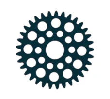 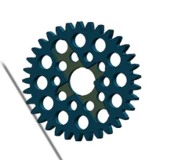 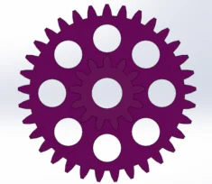 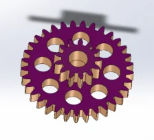Les crémaillères sont les éléments chargés de transformer le mouvement de rotation transmis par les engrenages en un mouvement de translation linéaire. Dans chaque boîtier mécanique, une crémaillère est guidée par la structure interne du carter afin de garantir un déplacement rectiligne, sans jeu ni déviation.
Le système de ramassage est actionné par des servomoteurs à rotation continue. Contrairement aux servomoteurs classiques à position angulaire (0°-180°), ces servomoteurs ne se positionnent pas à un angle précis, mais fournissent une rotation continue dont la vitesse et le sens de rotation sont contrôlés par le signal PWM.
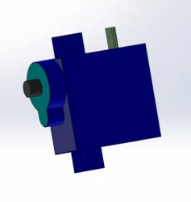Les boîtiers mécaniques constituent la structure principale du système de ramassage. Chaque boîtier intègre un servomoteur à rotation continue, un train d'engrenages ainsi qu'une crémaillère. Ils assurent à la fois le support mécanique, le guidage des pièces mobiles et la protection des composants internes.
 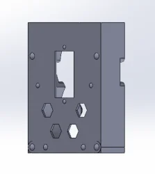
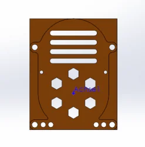
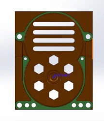
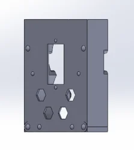
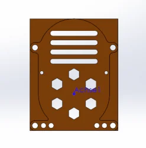
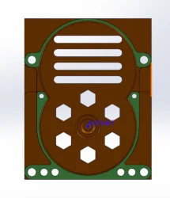
Assemblage des boîtiers Chaque boîtier du système de ramassage est assemblé comme un module mécatronique autonome. Il regroupe dans un même volume le servomoteur, les trains d'engrenages, le pignon de sortie et la crémaillère. Cette architecture compacte permet d'obtenir un mécanisme rigide, précis et facile à intégrer sur le robot.
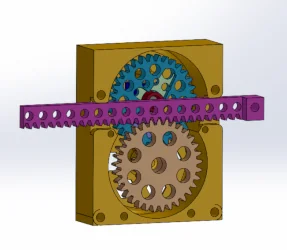 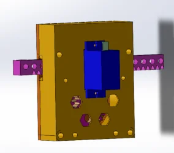 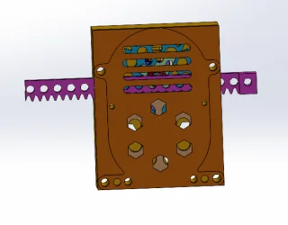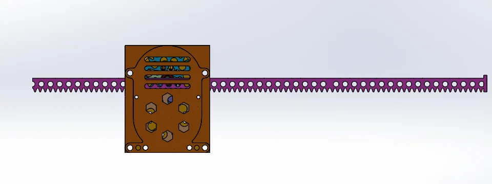
Fixation de la boite sur le rosmaster X3: Afin d'intégrer le module de ramassage au Rosmaster X3, nous avons conçu une pièce de fixation spécifique. Cette pièce est solidement fixée sur la structure du robot et sert de support mécanique au boîtier contenant le servomoteur, les engrenages et la crémaillère.
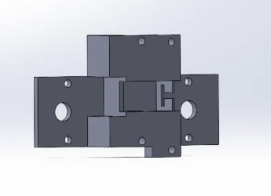 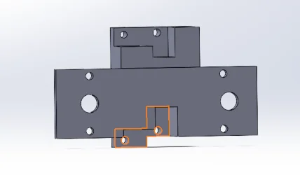Le système de ramassage est constitué de deux boîtiers mécaniques distincts, chacun ayant une fonction bien précise. Le premier boîtier est dédié au mouvement vertical du module. Il permet de monter et de descendre le système de ramassage afin d'éviter le contact permanent avec le sol lorsque le robot se déplace. Ce réglage protège la pelle, réduit les frottements et améliore la mobilité du Rosmaster X3. Le second boîtier est consacré au mécanisme de ramassage proprement dit. Il contient le servomoteur, les engrenages et les crémaillères qui actionnent la balayette, permettant de ramasser et retenir les déchets.
b. La pelle
La pelle constitue l'organe terminal du système de ramassage. Elle est fixée aux extrémités de la crémaillère du boîtier qui permet de monter et de descedre le système de ramassage et reçoit directement le mouvement généré par les engrenages.
c. La balayette
La balayette est l'élément frontal du système de ramassage. Elle est positionnée devant la pelle et fixée sur le mécanisme actionné par la crémaillère du boîtier de ramassage. Son rôle est de guider les déchets vers la pelle en les poussant et en les recentrant pendant la phase de fermeture du système.
2. Assemblage sous Solidworks
Après la conception et la fabrication de toutes les pièces, les deux boîtiers mécaniques, la structure de support, la pelle et la balayette sont assemblés pour former le module complet de ramassage du Rosmaster X3. Une fois assemblé, le module est solidement fixé à l'avant du Rosmaster X3 via la pièce de support dédiée. L'ensemble constitue un système compact, rigide et parfaitement intégré au robot, garantissant un ramassage efficace et fiable des déchets lors des épreuves du TRC_2025.
Télécharger b2ms_ramassage.zip
3. Impression et montage
Une fois la conception mécanique terminée, l'étape suivante consiste à imprimer toutes les pièces nécessaires pour le système de ramassage. L'impression 3D permet de produire des pièces précises et personnalisées, adaptées aux contraintes du RosMaster X3.
 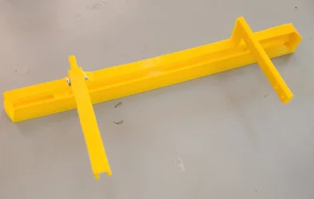
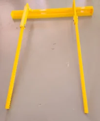
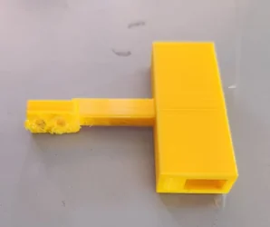
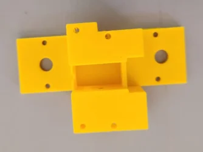
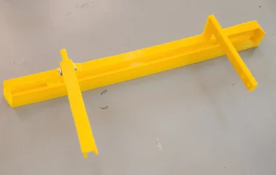
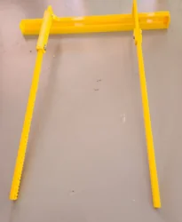
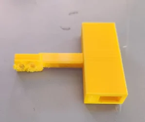
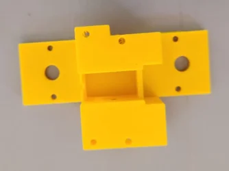
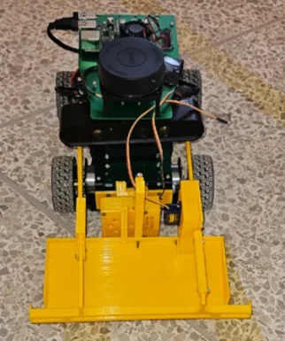 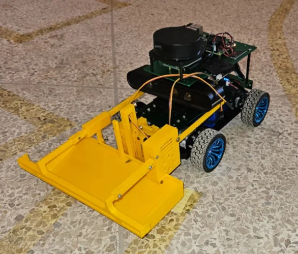 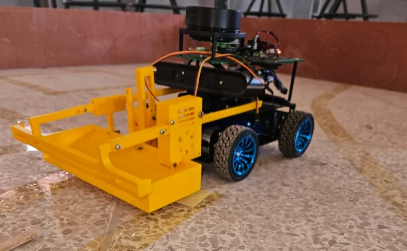